Repeating
/missions — Repeating tab; Daily 10 of 25 XP, Weekly 25 of 100 XP; done rows muted, open rows carry the description

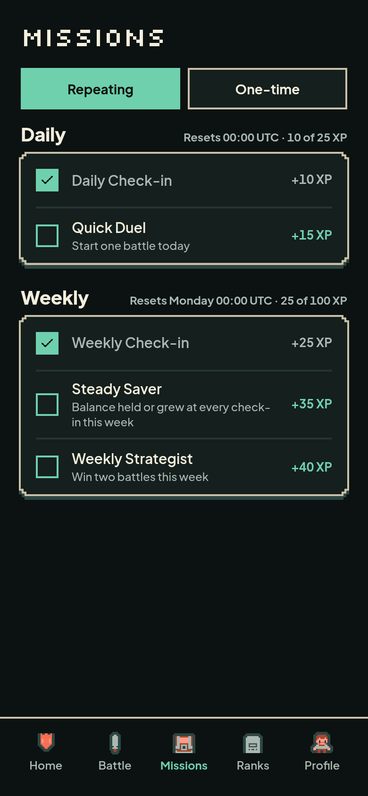
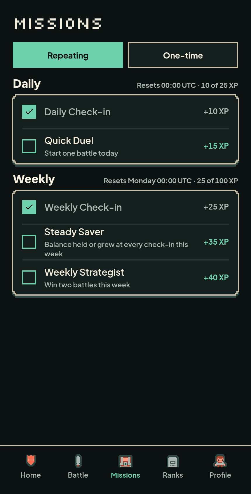
Before (Foundation 2 Missions)
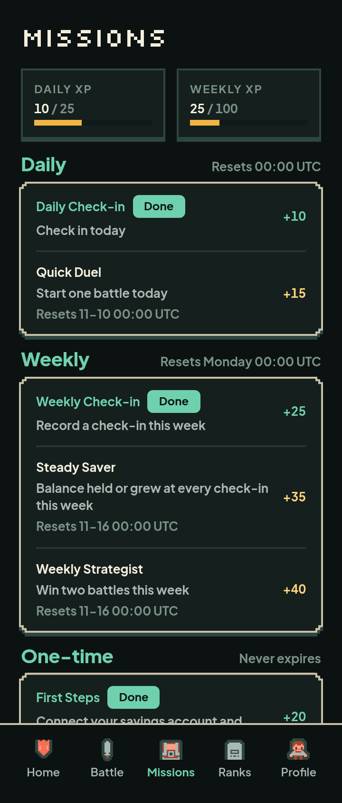
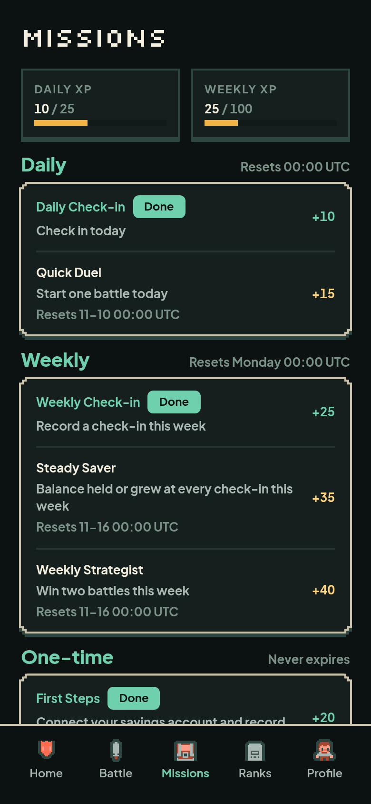
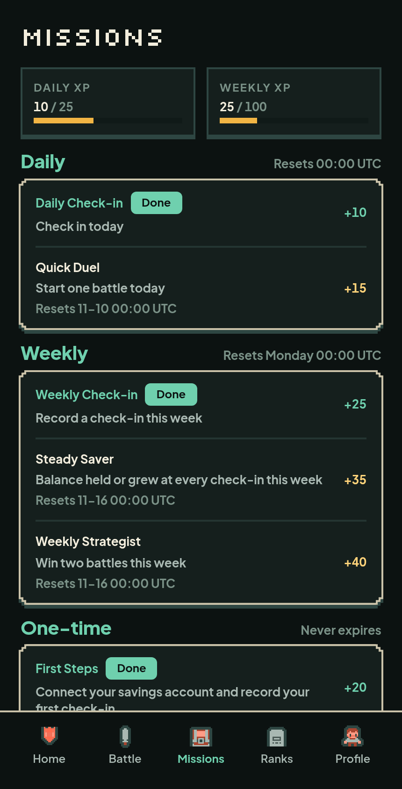
The Missions batch at 360, 390 and 430: Repeating (Daily and Weekly groups),
One-time, all done, empty, error and loading. Renders are 2× device-scale
PNGs from the headless CDP harness with fixture data. Write corrections in
NOTES.md.
/missions — Repeating tab; Daily 10 of 25 XP, Weekly 25 of 100 XP; done rows muted, open rows carry the description





/missions — One-time tab; one grouped panel, “Never expires”, no counter
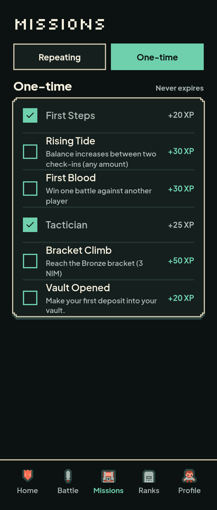
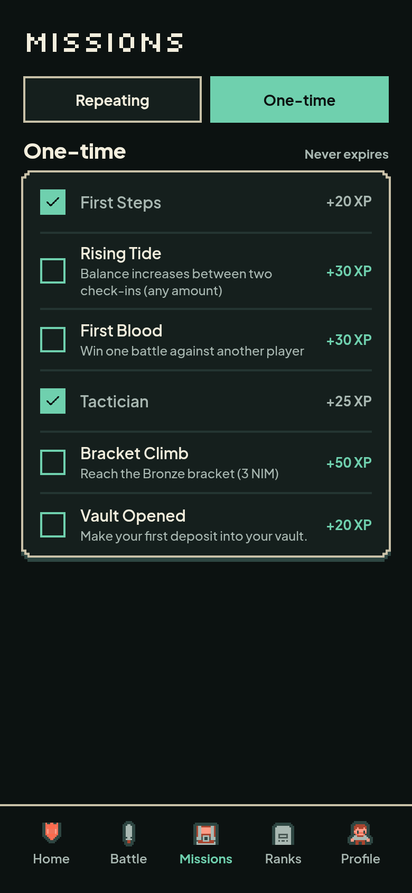
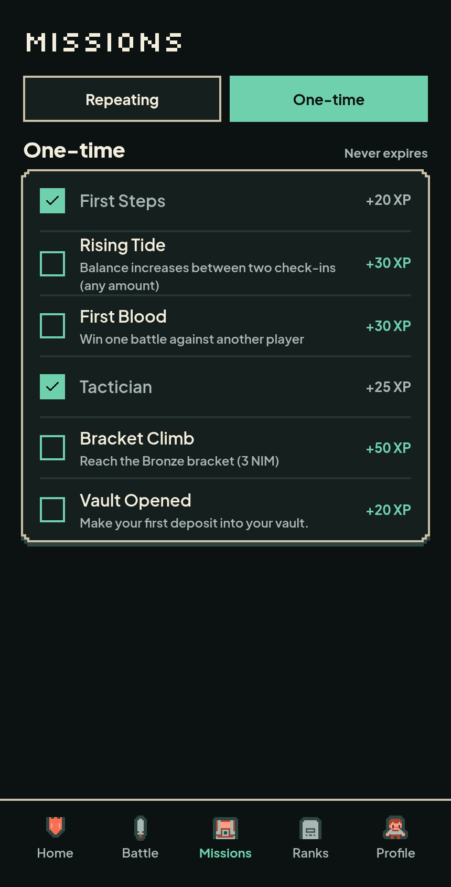
/missions — every row completed; counters at the caps (25 of 25, 100 of 100)
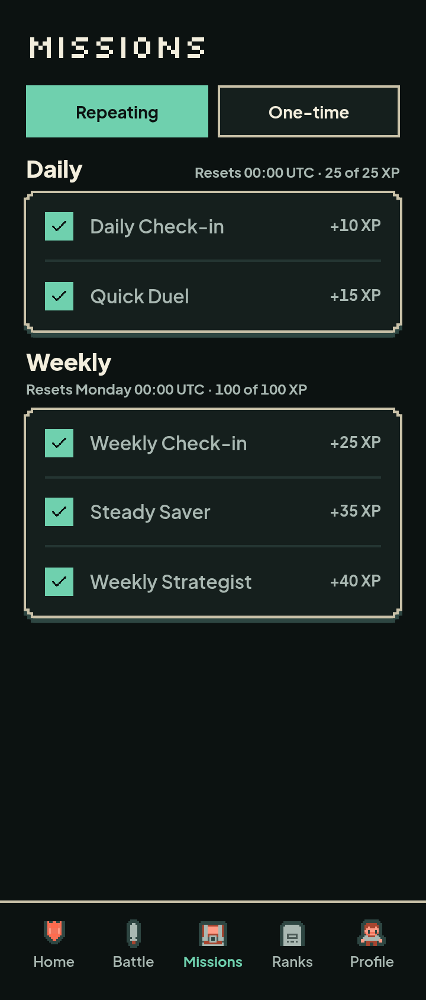
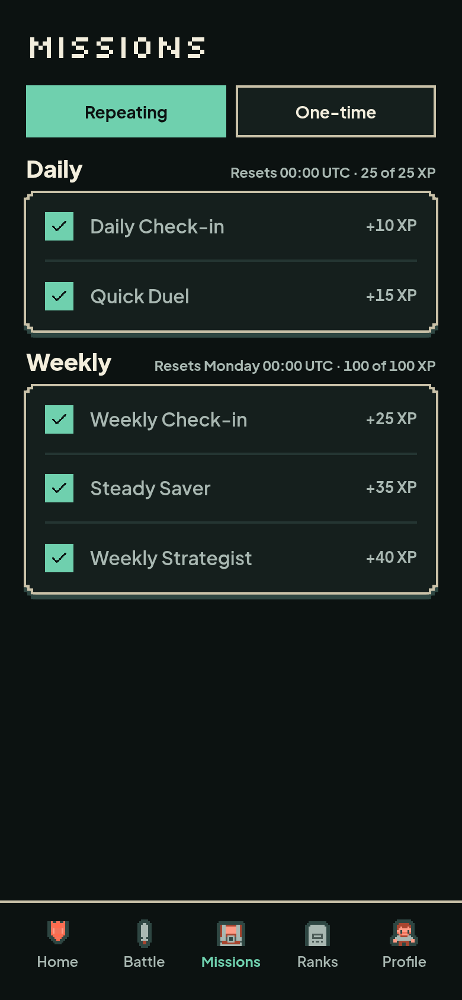
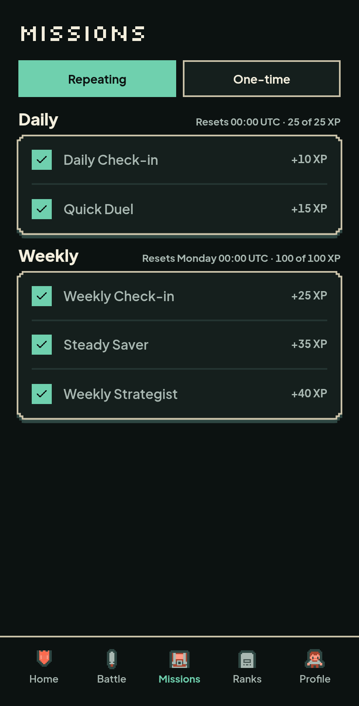
/missions — Repeating tab with an empty slate; the One-time tab has its own empty copy
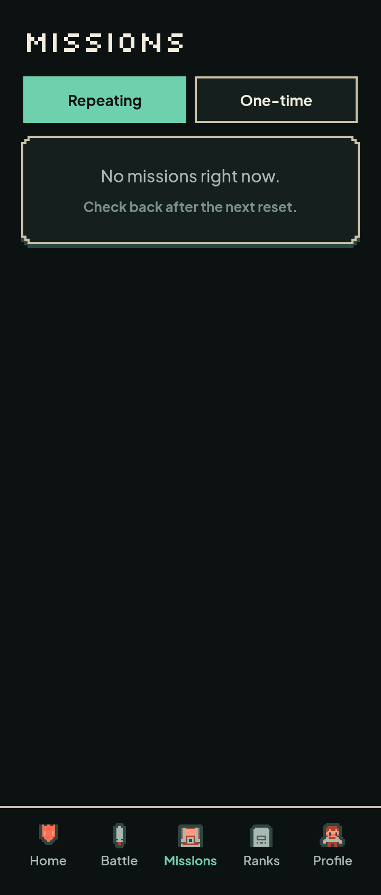
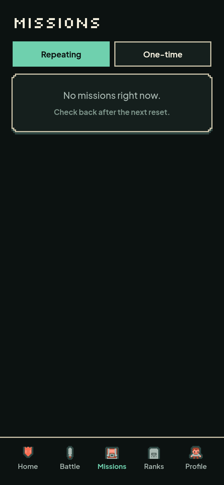
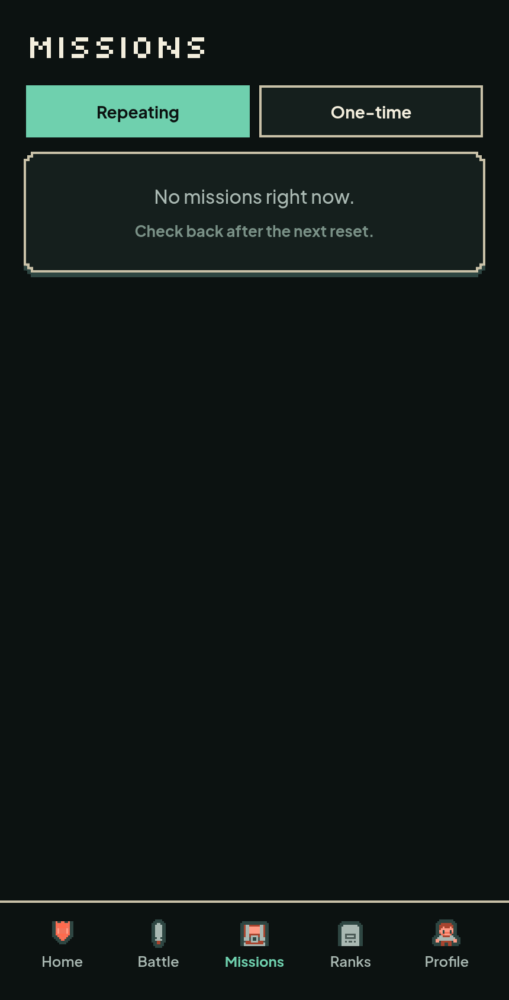
/missions — “Couldn't load missions.” banner and a secondary Try again button
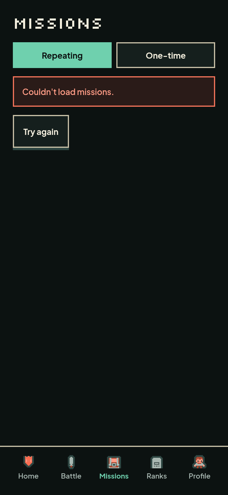
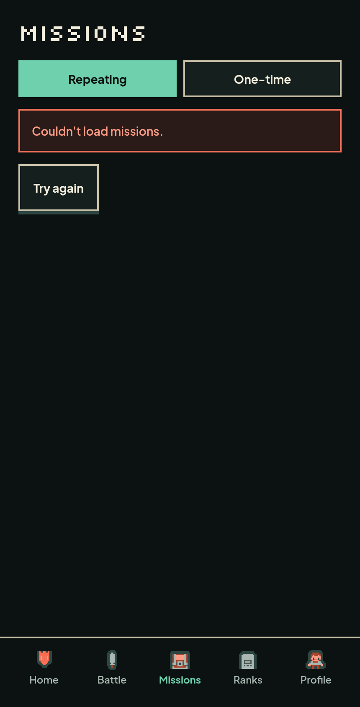
/missions — tabs stay, the three-dot LoadingState waits in the body
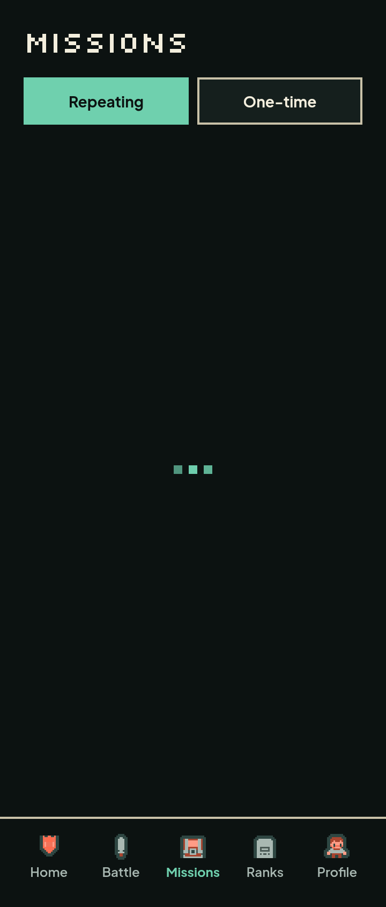
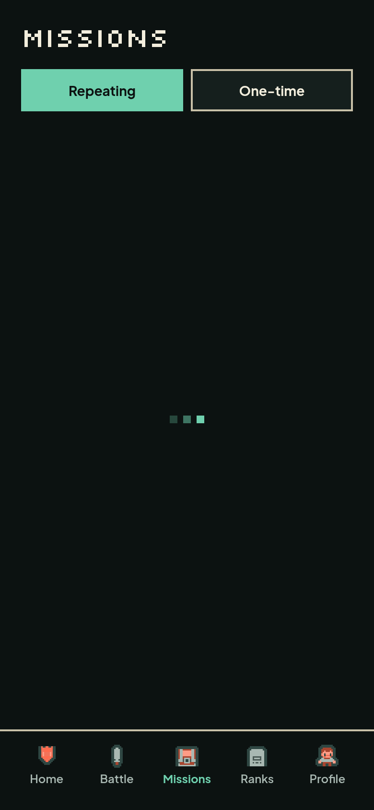
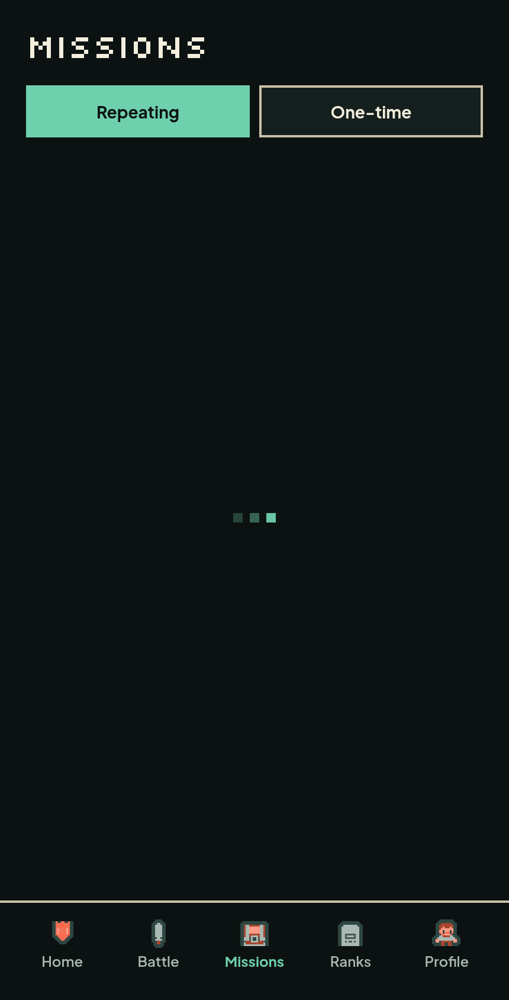
| Check | Result |
|---|---|
| Horizontal overflow | 0 on every state at 360/390/430 |
| Wide elements | none |
| Targets under 44×44 | none (tabs and Try again pass; rows are not interactive) |
| Minimum font | 12px |
| Focus | every tab stop in view, uncovered, 2px mint outline |
| Renders | 18 PNGs (6 states × 3 widths) |
Raw audit: ../audit/final-audit.jsonl.
The real Supabase backend is not configured in this sandbox. Renders use
fixture data; the database and Nimiq Pay pass are the deployment step in
NOTES.md.